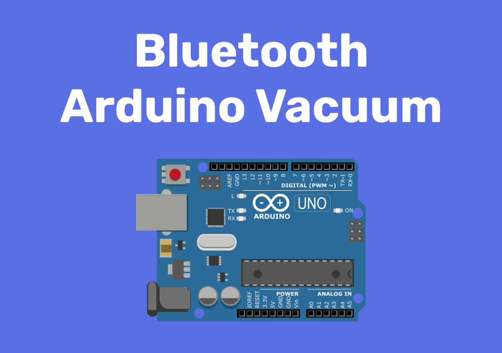

<body>
  <!-- hero -->
  <section class="hero hero-with-header">
    <div class="container">
      <div class="row justify-content-center">
        <div class="col-md-8">
          <div class="d-flex justify-content-between">
            <h1 class="text-decorated"><b>Bluetooth Arduino Vacuum</b></h1>
          </div>
          <p class="fs-20">
            For my Supervisory Control and Data Acquisition course (SCADA), I
            was tasked with implementing a SCADA system using sensors, actuators
            and a human machine interface (HMI) to acquire data. The hard work
            of my partner and I resulted in a fully functional Bluetooth Arduino
            vacuum. The features of the bot include two modes of operation:
            automatic and manual. The HMI also includes fan monitoring, distance
            monitoring (by displaying a graph) + monitoring the number of
            obstacles encountered.
          </p>
        </div>
      </div>
      <div class="row justify-content-center">
        <div class="col-md-8">
          
          <h4 class="mt-5">
            Bluetooth vs. Wi-fi
          </h4>
          <p class="fs-20 text-black">
            The initial design of the vacuum included using the ESP8266 Wi-Fi
            module in place of the HC05 Bluetooth module. After extensive
            research, we came to realize that using the Wi-Fi module would
            increase the risk of certain complications such as network
            connectivity issues (network authentication and network
            reliability). As a result, we began to research alternatives of
            wireless connectivity, and we arrived at the conclusion that
            Bluetooth Low Energy (BLE) would be the best alternative.
          </p>

          <h4 class="mt-4">Benefits of BLE</h4>
          <ul class="mt-1">
            <li class="fs-20">
              There is no need to connect to a network and so we could deploy
              the bot anywhere without hassle.
            </li>
            <li class="fs-20">
              BLE is optimized for low power consumption by sending small
              amounts of data at low transfer speeds.
            </li>
            <li class="fs-20">
              The BLE capability exists on most smartphones and websites which
              is crucial for scalability (in case we want to make an app or
              website for the HMI)
            </li>
          </ul>

          <h4 class="mt-4">Communicating with the Arduino</h4>
          <p class="fs-20 text-black">
            Receiving and sending information to the Arduino was made possible
            by the BluetoothTerminal.js library. The web client sends
            information as single characters which is accepted as commands for
            the Arduino (the character to command key can be found below).
          </p>
          <ul class="mt-1">
            <li class="fs-20">‘a’ – Move forward</li>
            <li class="fs-20">‘b’ – Move backward</li>
            <li class="fs-20">‘c’ – Turn right</li>
            <li class="fs-20">‘d’ – Turn left</li>
            <li class="fs-20">‘e’ – Stop moving (manual mode ON)</li>
            <li class="fs-20">‘f’ – Turn fan on</li>
            <li class="fs-20">‘g’ – Turn fan off</li>
            <li class="fs-20">‘p’ – Automatic mode ON</li>
          </ul>
          <p class="fs-20 text-black mt-2">
            <b>Below is the GUI for controlling the arduino. </b>
          </p>
          
          <p class="fs-20 text-black">
            The Arduino also sends information to the web client as a string
            which is then interpreted and displayed on the HMI for the user to
            understand.
          </p>
          <p class="fs-20 text-black">
            The format of the string can be found below:
          </p>
          <h2 class="text-center">A 9 9 9 O 5</h2>
          <ul class="mt-1">
            <li class="fs-20">
              First character
              <ul>
                <li>
                  'A' - Automatic mode
                </li>
                <li>'M' - Manual mode</li>
              </ul>
            </li>
            <li class="fs-20">
              Second, third and fourth characters
              <ul>
                <li>Distance in millimeters</li>
              </ul>
            </li>
            <li class="fs-20">
              Fifth character
              <ul>
                <li>
                  'I' Fan ON
                </li>
                <li>'O' Fan OFF</li>
              </ul>
            </li>
            <li class="fs-20">
              Sixth character onwards
              <ul>
                <li>
                  Amound of obstacles encountered
                </li>
              </ul>
            </li>
          </ul>
          <p class="fs-20 text-black mt-2">
            <b
              >Below is a completed schematic of our Bluetooth Arduino Vacuum.
            </b>
          </p>
          
          <h4 class="mt-4">Software/Technologies used</h4>
          <ul class="mt-1">
            <li class="fs-20">Epoch.js, D3.js</li>
            <li class="fs-20">BluetoothTerminal.js</li>
            <li class="fs-20">Tachyons.css</li>
            <li class="fs-20">jQueryUI.js</li>
            <li class="fs-20">Firebase Hosting</li>
            <li class="fs-20">Arduino Uno Software</li>
          </ul>
          <h4 class="mt-4">Hardware/Materials Used</h4>
          <ul class="mt-1">
            <li class="fs-20">Arduino Uno</li>
            <li class="fs-20">Electric Wires</li>
            <li class="fs-20">DC 12V Fan</li>
            <li class="fs-20">Anker Power Bank</li>
            <li class="fs-20">Ultrasonic Sensor</li>
            <li class="fs-20">Twin Industries Breadboard</li>
            <li class="fs-20">Tupperware</li>
            <li class="fs-20">DC Motor (4)</li>
            <li class="fs-20">HC05 Bluetooth Module</li>
          </ul>

          <h4 class="mt-4">View a demo</h4>
          <div style="position:relative;padding-top:56.25%;">
            <iframe style="position:absolute;top:0;left:0;width:100%;height:100%;" src="https://player.vimeo.com/video/346768608" frameborder="0"
                allow="autoplay; fullscreen" allowfullscreen></iframe>
        </div>
        </div>
      </div>
    </div>
  </section>

</body>
